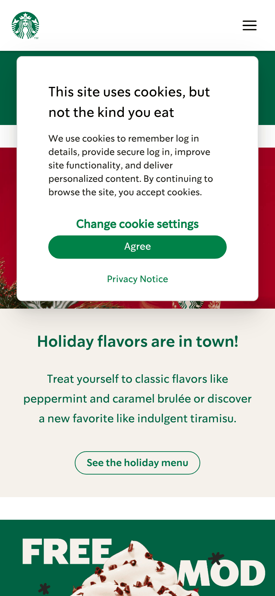

Website check · 2026-11-20
Starbucks Coffee Company
https://www.starbucks.com/
Checked as a typical phone on a slow 4G line (the way Google tests mobile pages).
3 things that lose you customers
1. The page takes 8.1 s to show its main content on a phone
Google's bar is 2.5 s. Every extra second, more people give up and pick the next result.
Compared with a 1-second page, a phone visitor is about 115 % more likely to leave before doing anything (Google). Over 3 seconds, Google measured that about half of phone visits are abandoned.1,2,3
2. Missing the basics people look for before a visit: opening hours, map or directions link, link to the Google Business Profile
Hours, directions and reviews are what a nearby searcher checks; when the site hides them, Google and the customer go elsewhere.
28 % of nearby phone searches end in a purchase (Google): the shop that shows hours and directions gets it.4
3. No tap-to-call button
Most local customers decide on a phone; a number you can't tap is a call that never happens.
76 % of people who search nearby on a phone visit a business within a day (Google): every step in their way sends them to a competitor who is one tap away.4
Accessibility: 100/100 good
Can everyone use this page, including people with poor eyesight or a screen reader? Over 5,000 website accessibility (ADA) lawsuits were filed in 2025, about 2 in 3 against companies under $50M revenue.5 0 kinds of problem found by automatic WCAG 2 A/AA checks (axe-core).
- No automatic accessibility problems found.
Speed on a phone
| Main content shows after | 8.1 s | good is 2.5 s or less. The biggest thing on screen was: "A quad of Starbucks holiday drinks against a red background" |
| First thing on screen after | 1.6 s | good is 1.8 s or less |
| Page jumps while loading | 0.24 | good is under 0.1 |
| Frozen while loading (blocking time) | 0.6 s | good is under 0.6 s on this phone |
| Downloaded on first visit | 1.8 MB in 79 files | lean is under 2.5 MB |
On a phone
- ✓ Pinch-zoom allowed
- ✓ No sideways scrolling
- ✓ Tap targets big enough (2 too small)
- ✓ Text big enough (0 bits under 12 px)
The basics a customer looks for, on the home page
- ✓ Padlock (HTTPS)
- ✓ Page title
- ✓ Search description
- ✗ Tap-to-call phone numberOn a phone people have to copy the number by hand; many just don't call.
- ✗ Map or directions linkPeople who want to visit can't see where you are in one tap.
- ✗ Opening hoursThe #1 question before a visit; without it people pick a place that shows them.
- ✗ Link to the Google Business ProfileReviews and 'Directions' live there; the site does not send people to them.
- ✗ Business data for Google (schema.org)Google can't read the name, address, hours and phone for rich results.
- ✓ Site icon
- ✓ Share picture
What a phone visitor sees first

Where the numbers come from
- Google / SOASTA Research, 2017: as a mobile page's load time goes from 1 s to 3 s the chance a visitor leaves (bounces) rises 32 %; 1 s to 5 s: 90 %; to 6 s: 106 %; to 10 s: 123 %. https://www.thinkwithgoogle.com/marketing-strategies/app-and-mobile/page-load-time-statistics/
- Google DoubleClick, 2016 ("The Need for Mobile Speed"): 53 % of mobile site visits are abandoned when a page takes longer than 3 seconds to load. https://www.thinkwithgoogle.com/marketing-strategies/app-and-mobile/mobile-page-speed-new-industry-benchmarks/
- Google web.dev, Core Web Vitals: good = largest paint within 2.5 s, layout shift under 0.1, quick response to taps; Google uses these for search ranking. https://web.dev/articles/vitals
- Think with Google, 2016: 76 % of people who search on a phone for something nearby visit a related business within a day, and 28 % of those searches end in a purchase. https://www.thinkwithgoogle.com/consumer-insights/consumer-trends/mobile-search-trends-consumers-to-stores/
- UsableNet, 2025 Year-End Digital Accessibility Lawsuit Report: over 5,000 website accessibility (ADA) lawsuits in federal and state courts in 2025; about 2 in 3 were against companies under $50M revenue. Level Access, web accessibility lawsuits 2025 (citing Seyfarth Shaw): 3,117 federal ADA Title III website lawsuits in 2025, up 27 % on 2024. https://info.usablenet.com/2025-year-end-report-on-web-accessibility-lawsuits https://www.levelaccess.com/blog/web-accessibility-lawsuits